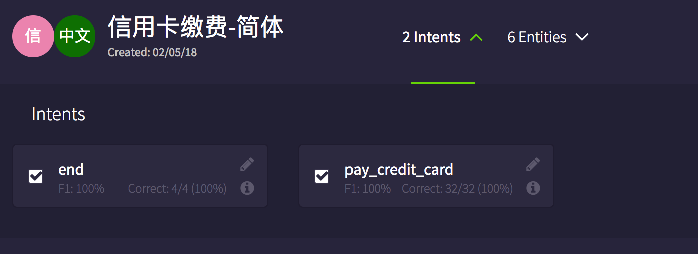
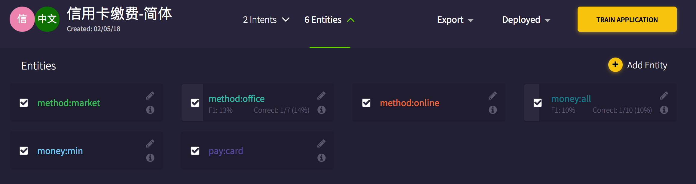

<!DOCTYPE html>
<!--[if IE 8]><html class="no-js lt-ie9" lang="en" > <![endif]-->
<!--[if gt IE 8]><!--> <html class="no-js" lang="en" > <!--<![endif]-->
<head>
  <meta charset="utf-8">
  
  <meta name="viewport" content="width=device-width, initial-scale=1.0">
  
  <title>多轮对话 &mdash; ChatFlow 0.1 documentation</title>
  

  
  
    <link rel="shortcut icon" href="_static/favicon.ico"/>
  

  

  
  
    

  

  
  
    <link rel="stylesheet" href="_static/css/theme.css" type="text/css" />
  

  
    <link rel="stylesheet" href="_static/css/custom.css" type="text/css" />
  
    <link rel="stylesheet" href="https://maxcdn.bootstrapcdn.com/font-awesome/4.4.0/css/font-awesome.min.css" type="text/css" />
  

  
        <link rel="index" title="Index"
              href="genindex.html"/>
        <link rel="search" title="Search" href="search.html"/>
    <link rel="top" title="ChatFlow 0.1 documentation" href="index.html"/>
        <link rel="next" title="Superbot介绍" href="superbot.html"/>
        <link rel="prev" title="Node介绍" href="dialogue_nodes.html"/> 

  
  <script src="_static/js/modernizr.min.js"></script>

</head>

<body class="wy-body-for-nav" role="document">

   
  <div class="wy-grid-for-nav">

    
    <nav data-toggle="wy-nav-shift" class="wy-nav-side">
      <div class="wy-side-scroll">
        <div class="wy-side-nav-search">
          

          
            
              <a href="http://ChatFlow.kitt.ai" target="_blank" class="icon icon-home"> ChatFlow
            
          

          
            
            
          
          </a>

          

          
<div role="search">
  <form id="rtd-search-form" class="wy-form" action="search.html" method="get">
    <input type="text" name="q" placeholder="Search docs" />
    <input type="hidden" name="check_keywords" value="yes" />
    <input type="hidden" name="area" value="default" />
  </form>
</div>

          
        </div>

        <div class="wy-menu wy-menu-vertical" data-spy="affix" role="navigation" aria-label="main navigation">
          
            
            
                <ul class="current">
<li class="toctree-l1"><a class="reference external" href="../index.html#://">English Version</a></li>
<li class="toctree-l1"><a class="reference internal" href="index.html">欢迎使用ChatFlow</a></li>
<li class="toctree-l1"><a class="reference internal" href="quickstart.html">快速入门</a></li>
<li class="toctree-l1"><a class="reference internal" href="build_a_bot.html">使用ChatFlow构建第一个bot</a></li>
<li class="toctree-l1"><a class="reference internal" href="dialogue_nodes.html">Node介绍</a></li>
<li class="toctree-l1 current"><a class="current reference internal" href="#">多轮对话</a><ul>
<li class="toctree-l2"><a class="reference internal" href="#id3">什么是多轮对话</a></li>
<li class="toctree-l2"><a class="reference internal" href="#id4">ChatFlow如何实现多轮对话</a></li>
<li class="toctree-l2"><a class="reference internal" href="#bot">做一个支持多轮对话的bot</a><ul>
<li class="toctree-l3"><a class="reference internal" href="#id5">创建NLU项目</a></li>
<li class="toctree-l3"><a class="reference internal" href="#id6">创建ChatFlow项目</a></li>
</ul>
</li>
</ul>
</li>
<li class="toctree-l1"><a class="reference internal" href="superbot.html">Superbot介绍</a></li>
<li class="toctree-l1"><a class="reference internal" href="debug.html">调试 ChatFlow</a></li>
<li class="toctree-l1"><a class="reference internal" href="dueros.html">使用ChatFlow部署小度技能</a></li>
</ul>

            
          
        </div>
      </div>
    </nav>

    <section data-toggle="wy-nav-shift" class="wy-nav-content-wrap">

      
      <nav class="wy-nav-top" role="navigation" aria-label="top navigation">
        
          <i data-toggle="wy-nav-top" class="fa fa-bars"></i>
          <a href="index.html">ChatFlow</a>
        
      </nav>


      
      <div class="wy-nav-content">
        <div class="rst-content">
          


<div role="navigation" aria-label="breadcrumbs navigation">
  <ul class="wy-breadcrumbs">
    
      <li><a href="index.html">Docs</a> &raquo;</li>
        
      <li>多轮对话</li>
    
    
      <li class="wy-breadcrumbs-aside">
        
        
          <a href="https://groups.google.com/a/kitt.ai/forum/#!forum/chat" class="fa fa-comments" style="color:#55507c" target="_blank"> Forum</a>
        
        
            
            <a href="_sources/multi_turn_dialogue.rst.txt" rel="nofollow"> View page source</a>
          
        
      </li>
    
  </ul>
  <hr/>
</div>
          <div role="main" class="document" itemscope="itemscope" itemtype="http://schema.org/Article">
           <div itemprop="articleBody">
            
  <div class="section" id="multi-turn-dialogue">
<span id="id1"></span><h1><a class="toc-backref" href="#id7">多轮对话</a><a class="headerlink" href="#multi-turn-dialogue" title="Permalink to this headline">¶</a></h1>
<div class="contents topic" id="id2">
<p class="topic-title first">目录</p>
<ul class="simple">
<li><a class="reference internal" href="#multi-turn-dialogue" id="id7">多轮对话</a><ul>
<li><a class="reference internal" href="#id3" id="id8">什么是多轮对话</a></li>
<li><a class="reference internal" href="#id4" id="id9">ChatFlow如何实现多轮对话</a></li>
<li><a class="reference internal" href="#bot" id="id10">做一个支持多轮对话的bot</a><ul>
<li><a class="reference internal" href="#id5" id="id11">创建NLU项目</a></li>
<li><a class="reference internal" href="#id6" id="id12">创建ChatFlow项目</a></li>
</ul>
</li>
</ul>
</li>
</ul>
</div>
<div class="section" id="id3">
<h2><a class="toc-backref" href="#id8">什么是多轮对话</a><a class="headerlink" href="#id3" title="Permalink to this headline">¶</a></h2>
<p>在人机对话中，bot除了明确用户的意图之外，还需要获取多个必要的信息，比如在用户说：“帮我
预订周四下午盛百万的四人位”，用户的意图是“预订餐厅”，但是这件事的完成需要提供时间（周四下午）、
地点（盛百万）、人数（四人）。如果用户说的是：“帮我预订盛百万的位置”，那么bot需要回问用户的
时间和人数等信息。在这个过程中，bot与用户是会有一次或者多次的对话交互的。多轮对话是与一件事情
的处理相对应的。</p>
<p>多轮对话并不一定会表现为多次的对话交互，如果用户一次性提供了充分的信息，那么也不会存在与用户的多次对话交互。</p>
</div>
<div class="section" id="id4">
<h2><a class="toc-backref" href="#id9">ChatFlow如何实现多轮对话</a><a class="headerlink" href="#id4" title="Permalink to this headline">¶</a></h2>
<p>从上文对多轮对话的介绍中来看，实现多轮的核心是获取用户某一意图的所有信息，我们可以借助 <a class="reference external" href="https://nlu.kitt.ai/">NLU</a> 来识别
出用户语料中的所有intent和entities，然后在ChatFlow中定义用户某一个intent需要包含哪些entities
才能进行处理，如果缺少必要的entities，那么就在ChatFlow中给用户返回询问这一属性的值，直到用户的这一意图
的所有信息都获取到为止。</p>
<p>ChatFlow中可以通过 <code class="docutils literal notranslate"><span class="pre">msg.kitt</span></code> 属性来保存在用户在当前对话的上下文信息，我们可以借助这个功能来记录
用户之前已经提供的信息，然后只向用户咨询他还需要提供的信息。</p>
</div>
<div class="section" id="bot">
<h2><a class="toc-backref" href="#id10">做一个支持多轮对话的bot</a><a class="headerlink" href="#bot" title="Permalink to this headline">¶</a></h2>
<p>我们来做一个用户缴纳信用卡的多轮场景的bot。</p>
<p>首先我们先定义好用户缴纳信用卡的意图如下：</p>
<table border="1" class="docutils">
<colgroup>
<col width="25%" />
<col width="34%" />
<col width="42%" />
</colgroup>
<thead valign="bottom">
<tr class="row-odd"><th class="head"><em>intents</em></th>
<th class="head">Description</th>
<th class="head">Sample Utterances</th>
</tr>
</thead>
<tbody valign="top">
<tr class="row-even"><td><code class="docutils literal notranslate"><span class="pre">pay_credit_card</span></code></td>
<td>用户缴纳信用卡</td>
<td>我想缴纳信用卡</td>
</tr>
<tr class="row-odd"><td><code class="docutils literal notranslate"><span class="pre">end</span></code></td>
<td>用户停止办理了</td>
<td>我不想办理了</td>
</tr>
</tbody>
</table>
<p>然后我们定义用户缴纳信用卡需要的信息，即entities如下：</p>
<table border="1" class="docutils">
<colgroup>
<col width="25%" />
<col width="34%" />
<col width="42%" />
</colgroup>
<thead valign="bottom">
<tr class="row-odd"><th class="head"><em>entity</em></th>
<th class="head">Description</th>
<th class="head">Sample Utterances</th>
</tr>
</thead>
<tbody valign="top">
<tr class="row-even"><td><code class="docutils literal notranslate"><span class="pre">money:all</span></code></td>
<td>用户缴纳全额</td>
<td>我想缴纳全款</td>
</tr>
<tr class="row-odd"><td><code class="docutils literal notranslate"><span class="pre">money:min</span></code></td>
<td>用户缴纳最低</td>
<td>我想缴纳最低额</td>
</tr>
<tr class="row-even"><td><code class="docutils literal notranslate"><span class="pre">method:online</span></code></td>
<td>用户在线缴款</td>
<td>我通过线上缴款</td>
</tr>
<tr class="row-odd"><td><code class="docutils literal notranslate"><span class="pre">method:market</span></code></td>
<td>用户商超缴款</td>
<td>我通过商超缴款</td>
</tr>
<tr class="row-even"><td><code class="docutils literal notranslate"><span class="pre">method:office</span></code></td>
<td>用户邮局缴款</td>
<td>我通过邮局缴款</td>
</tr>
<tr class="row-odd"><td><code class="docutils literal notranslate"><span class="pre">pay:card</span></code></td>
<td>用户想缴纳的信用卡卡名</td>
<td>我想支付A卡的账单</td>
</tr>
</tbody>
</table>
<div class="admonition note">
<p class="first admonition-title">Note</p>
<p class="last">用户缴纳信用卡的多个信息可以出现在同一用户语料中，比如用户可以说“我想在邮局缴纳全款账单”，这样就包含了两个缴纳信用卡账单需要的信息。</p>
</div>
<div class="admonition note">
<p class="first admonition-title">Note</p>
<p class="last">相同的entity类型我们加上了统一的前缀，用于识别这是同一类型的entity。</p>
</div>
<div class="section" id="id5">
<h3><a class="toc-backref" href="#id11">创建NLU项目</a><a class="headerlink" href="#id5" title="Permalink to this headline">¶</a></h3>
<p>你可以下载 <a class="reference download internal" href="_downloads/信用卡缴费-简体-nlu.json" download=""><code class="xref download docutils literal notranslate"><span class="pre">信用卡缴费</span> <span class="pre">NLU</span> <span class="pre">json</span></code></a>，然后导入到
<a class="reference external" href="https://nlu.kitt.ai/">NLU</a> 中。</p>
<p>你会看到intent的列表如下图：</p>

<p>entity的列表如下图：</p>

<p>然后从Deployed-&gt;Test Endpoint-&gt;Endpoint中复制出当前NLU项目的endpoint，会在下面的ChatFlow的项目
中使用到。</p>
</div>
<div class="section" id="id6">
<h3><a class="toc-backref" href="#id12">创建ChatFlow项目</a><a class="headerlink" href="#id6" title="Permalink to this headline">¶</a></h3>
<p>你可以下载 <a class="reference download internal" href="_downloads/多轮对话demo-ChatFlow.json" download=""><code class="xref download docutils literal notranslate"><span class="pre">信用卡缴费</span> <span class="pre">ChatFlow</span> <span class="pre">json</span></code></a>，然后导入到 <a class="reference external" href="https://ChatFlow.dueros.baidu.com/">ChatFlow</a> 的项目中。</p>
<p>在 <strong>预处理entity</strong> function节点中有如下代码：</p>
<blockquote>
<div><div class="code javascript highlight-default notranslate"><div class="highlight"><pre><span></span><span class="n">msg</span><span class="o">.</span><span class="n">kitt</span><span class="o">.</span><span class="n">payInfo</span> <span class="o">=</span> <span class="n">msg</span><span class="o">.</span><span class="n">kitt</span><span class="o">.</span><span class="n">payInfo</span> <span class="o">||</span> <span class="p">{};</span>
<span class="n">let</span> <span class="n">entity</span> <span class="o">=</span> <span class="n">Object</span><span class="o">.</span><span class="n">keys</span><span class="p">(</span><span class="n">msg</span><span class="o">.</span><span class="n">NLU</span><span class="o">.</span><span class="n">entities</span><span class="p">)</span>
    <span class="o">.</span><span class="n">map</span><span class="p">(</span><span class="n">item</span><span class="o">=&gt;</span><span class="p">{</span>
        <span class="k">if</span><span class="p">(</span><span class="n">item</span><span class="o">===</span><span class="s1">&#39;pay:card&#39;</span><span class="p">)</span> <span class="p">{</span>
        <span class="n">msg</span><span class="o">.</span><span class="n">kitt</span><span class="o">.</span><span class="n">payInfo</span><span class="o">.</span><span class="n">card</span> <span class="o">=</span> <span class="n">msg</span><span class="o">.</span><span class="n">NLU</span><span class="o">.</span><span class="n">entities</span><span class="p">[</span><span class="n">item</span><span class="p">];</span>
    <span class="p">}</span><span class="k">else</span><span class="p">{</span>
        <span class="n">itemArr</span> <span class="o">=</span> <span class="n">item</span><span class="o">.</span><span class="n">split</span><span class="p">(</span><span class="s1">&#39;:&#39;</span><span class="p">);</span>
        <span class="n">msg</span><span class="o">.</span><span class="n">kitt</span><span class="o">.</span><span class="n">payInfo</span><span class="p">[</span><span class="n">itemArr</span><span class="p">[</span><span class="mi">0</span><span class="p">]]</span> <span class="o">=</span> <span class="n">itemArr</span><span class="p">[</span><span class="mi">1</span><span class="p">];</span>
    <span class="p">}</span>
<span class="p">});</span>
<span class="n">let</span> <span class="n">payInfoKeys</span> <span class="o">=</span> <span class="n">Object</span><span class="o">.</span><span class="n">keys</span><span class="p">(</span><span class="n">msg</span><span class="o">.</span><span class="n">kitt</span><span class="o">.</span><span class="n">payInfo</span><span class="p">);</span>
<span class="n">let</span> <span class="n">allNeedKeys</span> <span class="o">=</span> <span class="p">[</span><span class="s1">&#39;card&#39;</span><span class="p">,</span> <span class="s1">&#39;method&#39;</span><span class="p">,</span> <span class="s1">&#39;money&#39;</span><span class="p">];</span>
<span class="n">msg</span><span class="o">.</span><span class="n">needKey</span> <span class="o">=</span> <span class="n">allNeedKeys</span><span class="o">.</span><span class="n">filter</span><span class="p">(</span><span class="n">item</span><span class="o">=&gt;</span><span class="n">payInfoKeys</span><span class="o">.</span><span class="n">indexOf</span><span class="p">(</span><span class="n">item</span><span class="p">)</span><span class="o">&lt;</span><span class="mi">0</span><span class="p">)[</span><span class="mi">0</span><span class="p">];</span>

<span class="k">return</span> <span class="n">msg</span><span class="p">;</span>
</pre></div>
</div>
</div></blockquote>
<p>这段代码的功能是将NLU识别出来的entity结果通过 <code class="docutils literal notranslate"><span class="pre">msg.kitt</span></code> 存储起来，然后计算出
还需要用户提供的信息，即 <code class="docutils literal notranslate"><span class="pre">msg.needKey</span></code> ，该节点后面的switch节点中
会根据 <code class="docutils literal notranslate"><span class="pre">msg.needKey</span></code> 中的值来判断，向用户发送什么内容，来获取用户其他方面的信息，
比如“您想怎么付款？邮局，商超还是线上缴款？”。</p>
<p>现在你在 <strong>chat</strong> 部分输入：“我想通过邮局为A卡缴纳全款”，我们的bot会输出用户缴纳
信用卡需要的全部信息，如果我们只输入了：“我想缴费”，我们的bot就会依次询问用户：“你想为
哪张卡缴纳”，“你想通过什么方式缴纳”，“你想缴纳多少费用”，最终获取到用户为信用卡付费的全部信息。</p>
</div>
</div>
</div>


           </div>
          </div>
          <footer>
  
    <div class="rst-footer-buttons" role="navigation" aria-label="footer navigation">
      
        <a href="superbot.html" class="btn btn-neutral float-right" title="Superbot介绍" accesskey="n">Next <span class="fa fa-arrow-circle-right"></span></a>
      
      
        <a href="dialogue_nodes.html" class="btn btn-neutral" title="Node介绍" accesskey="p"><span class="fa fa-arrow-circle-left"></span> Previous</a>
      
    </div>
  

  <hr/>

  <div role="contentinfo">
    <p  style="color:#999;">
        &copy; Copyright 2016, KITT.AI.
      Last updated on Mar 26, 2018.

    </p>
  </div> 

  <div>

    <p>
      Made with <i class="fa fa-heart" style="color:red;"></i> in the city of
      <i class="fa fa-coffee" style="color:#6F4E37;"></i>
      <i class="fa fa-umbrella" style="color:#007FFF;"></i>
      <i class="fa fa-plane" style="color:#0F52BA;"></i>
      <i class="fa fa-diamond" style="color:#50C878;"></i>
    </p>
  </div>

</footer>

        </div>
      </div>

    </section>

  </div>
  


  

    <script type="text/javascript">
        var DOCUMENTATION_OPTIONS = {
            URL_ROOT:'./',
            VERSION:'0.1',
            COLLAPSE_INDEX:false,
            FILE_SUFFIX:'.html',
            HAS_SOURCE:  true
        };
    </script>
      <script type="text/javascript" src="_static/jquery.js"></script>
      <script type="text/javascript" src="_static/underscore.js"></script>
      <script type="text/javascript" src="_static/doctools.js"></script>
      <script type="text/javascript" src="_static/js/anchor.js"></script>

  

  
  
    <script type="text/javascript" src="_static/js/theme.js"></script>
  

  
  
  <script type="text/javascript">
      jQuery(function () {
          SphinxRtdTheme.StickyNav.enable();
      });
  </script>
   

</body>
</html>